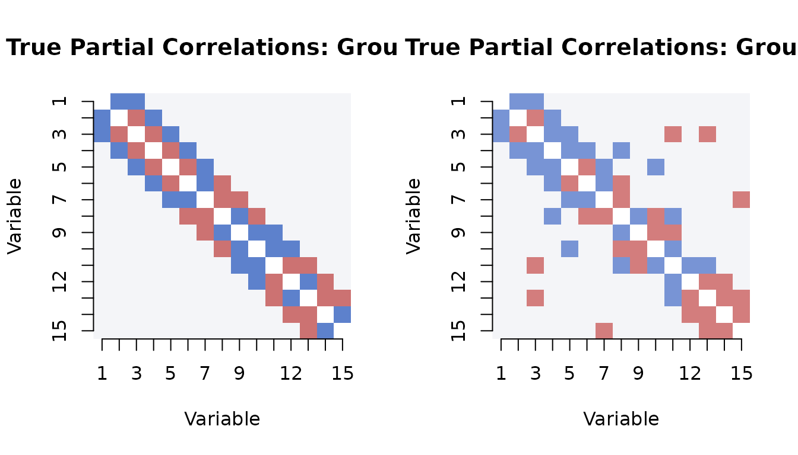
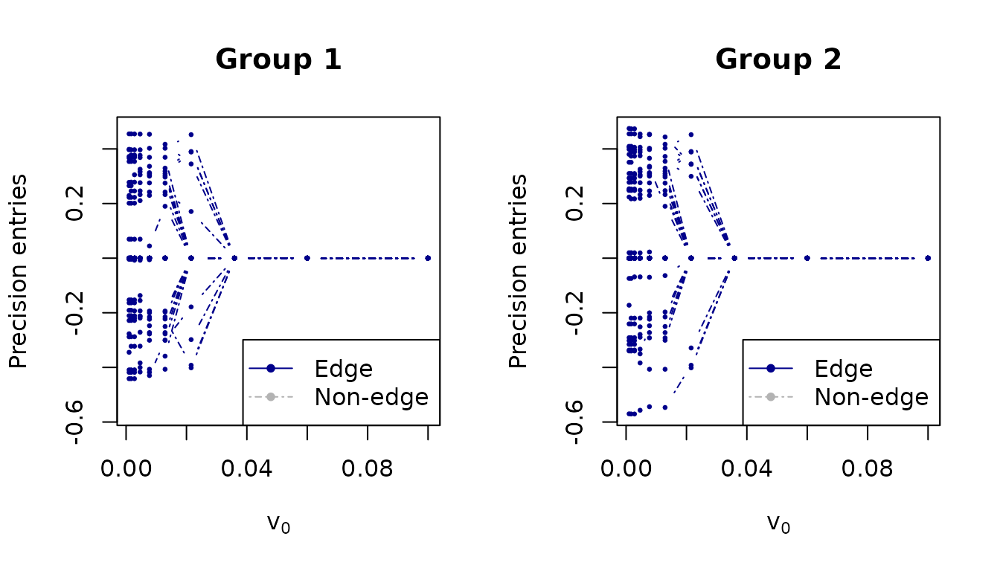
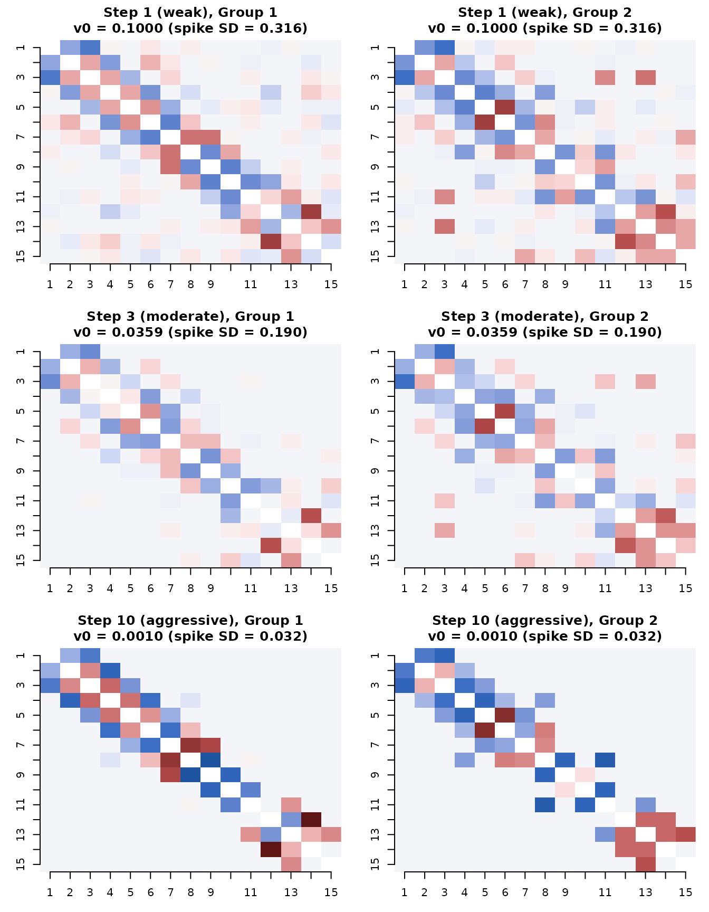
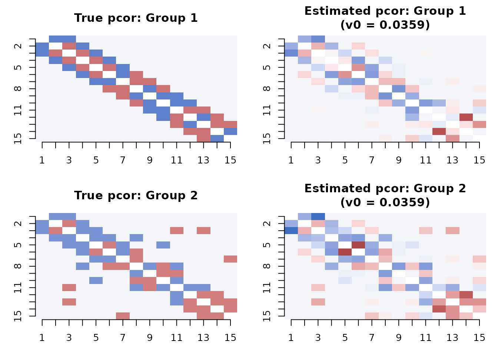

Parameter exploration: understanding the v0 ladder
parameter-exploration.RmdIntroduction
The spike variance v0 is the primary parameter
controlling sparsity in SSJGL. This vignette explores how
v0 affects the estimated graph and helps build intuition
for choosing it. We visualize the true partial correlations alongside
estimates at different v0 values, and explain why v0 = 0.01
is a natural default for normalized data.
The spike-and-slab model for edges
In SSJGL, each off-diagonal precision matrix entry has a spike-and-slab prior:
- Spike N(0, v0): the edge is noise (absent)
- Slab N(0, v1 = 1): the edge is real (present)
The E-step computes P(delta = 1 | data) — the posterior probability
that each edge is real. The spike standard deviation
sqrt(v0) defines the noise scale: partial correlations
smaller than this are considered noise.
For normalized data, partial correlations live in
[-1, 1]. This gives v0 a direct interpretation on the
partial correlation scale:
v0_vals <- c(0.1, 0.01, 0.001, 0.0001)
data.frame(
v0 = v0_vals,
spike_SD = round(sqrt(v0_vals), 3),
noise_boundary = paste0("|pcor| < ", round(sqrt(v0_vals), 2)),
interpretation = c(
"Weak sparsity: only very strong edges survive",
"Moderate sparsity: good default for most data",
"Aggressive: may miss weak but real edges",
"Very aggressive: only the strongest edges survive"
)
)
#> v0 spike_SD noise_boundary
#> 1 1e-01 0.316 |pcor| < 0.32
#> 2 1e-02 0.100 |pcor| < 0.1
#> 3 1e-03 0.032 |pcor| < 0.03
#> 4 1e-04 0.010 |pcor| < 0.01
#> interpretation
#> 1 Weak sparsity: only very strong edges survive
#> 2 Moderate sparsity: good default for most data
#> 3 Aggressive: may miss weak but real edges
#> 4 Very aggressive: only the strongest edges surviveSimulate data
We generate K=2 groups with p=15 variables using a band graph:
library(spikeyglass)
sim <- simulate_ssjgl_data(
K = 2, p = 15, n = 100,
graph_type = "band",
perturb_prob = 0.05,
signal = 0.3,
seed = 42
)True partial correlations
The true partial correlation matrix shows the signal we are trying to recover. The banded structure creates edges on the first and second off-diagonals:
# Compute true partial correlations from true precision matrices
true_pcor <- lapply(sim$Omega_list, precision_to_pcor)
# Visualize
par(mfrow = c(1, 2))
for (k in 1:2) {
mat <- true_pcor[[k]]
diag(mat) <- NA
image(1:15, 1:15, t(mat[15:1, ]),
col = hcl.colors(50, "Blue-Red 3"),
zlim = c(-0.5, 0.5),
main = paste("True Partial Correlations: Group", k),
xlab = "Variable", ylab = "Variable", axes = FALSE)
axis(1, at = 1:15); axis(2, at = 1:15, labels = 15:1)
}
# Range of true partial correlations (off-diagonal)
for (k in 1:2) {
offdiag <- true_pcor[[k]][upper.tri(true_pcor[[k]])]
nonzero <- offdiag[abs(offdiag) > 1e-10]
cat(sprintf("Group %d: %d nonzero edges, |pcor| range: [%.3f, %.3f]\n",
k, length(nonzero), min(abs(nonzero)), max(abs(nonzero))))
}
#> Group 1: 27 nonzero edges, |pcor| range: [0.300, 0.300]
#> Group 2: 31 nonzero edges, |pcor| range: [0.269, 0.269]Fitting across the v0 ladder
We use make_v0_ladder() to generate a 10-step
exploration ladder, then fit SSJGL across all steps:
v0s <- make_v0_ladder(lambda1 = 0.5, n_steps = 10)
cat("v0 ladder:\n")
data.frame(
step = 1:10,
v0 = round(v0s, 6),
spike_SD = round(sqrt(v0s), 4),
eff_penalty = round(0.5 / v0s, 1)
)
fit <- ssjgl(
Y = sim$data_list,
penalty = "fused",
lambda0 = 1,
lambda1 = 0.5,
lambda2 = 0.5,
v1 = 1,
v0s = v0s,
doubly = TRUE,
a = 1, b = 15,
maxitr.em = 100,
tol.em = 1e-4,
normalize = TRUE,
impute = FALSE
)How the solution evolves across v0
Solution path
The solution path shows how individual precision matrix entries are shrunk as v0 decreases:
plot_path(v0s, fit, thres = 0.5, normalize = FALSE,
xlab = expression(v[0]), ylab = "Precision entries",
main = c("Group 1", "Group 2"), par = c(1, 2))
Comparing estimates at v0 steps 1, 3, and 10
We now visualize the estimated partial correlations at three key points along the ladder: the first step (weak sparsity), the third step (moderate, our recommended default), and the tenth step (very aggressive).
steps_to_show <- c(1, 3, 10)
step_labels <- c("Step 1 (weak)", "Step 3 (moderate)", "Step 10 (aggressive)")
par(mfrow = c(3, 2), mar = c(3, 3, 3, 1))
for (idx in seq_along(steps_to_show)) {
s <- steps_to_show[idx]
theta_s <- fit$thetalist[[s]]
prob_s <- fit$problist1[[s]]
for (k in 1:2) {
# Estimated partial correlations
pcor_est <- precision_to_pcor(theta_s[[k]])
diag(pcor_est) <- NA
image(1:15, 1:15, t(pcor_est[15:1, ]),
col = hcl.colors(50, "Blue-Red 3"),
zlim = c(-0.5, 0.5),
main = sprintf("%s, Group %d\nv0 = %.4f (spike SD = %.3f)",
step_labels[idx], k, v0s[s], sqrt(v0s[s])),
xlab = "", ylab = "", axes = FALSE)
axis(1, at = 1:15); axis(2, at = 1:15, labels = 15:1)
}
}
What happens at each step
for (idx in seq_along(steps_to_show)) {
s <- steps_to_show[idx]
prob_s <- fit$problist1[[s]]
# Count edges at threshold 0.5
adj_s <- (prob_s >= 0.5) * 1L
diag(adj_s) <- 0L
n_edges <- sum(adj_s[upper.tri(adj_s)])
# Probability distribution
prob_upper <- prob_s[upper.tri(prob_s)]
n_uncertain <- sum(prob_upper > 0.1 & prob_upper < 0.9)
n_distinct <- length(unique(round(prob_upper, 6)))
cat(sprintf("\n--- %s (v0 = %.4f, spike SD = %.3f) ---\n",
step_labels[idx], v0s[s], sqrt(v0s[s])))
cat(sprintf(" Edges (prob > 0.5): %d\n", n_edges))
cat(sprintf(" Uncertain edges (0.1 < prob < 0.9): %d\n", n_uncertain))
cat(sprintf(" Distinct probability values: %d\n", n_distinct))
cat(sprintf(" Probability range: [%.6f, %.6f]\n",
min(prob_upper), max(prob_upper)))
}
#>
#> --- Step 1 (weak) (v0 = 0.1000, spike SD = 0.316) ---
#> Edges (prob > 0.5): 0
#> Uncertain edges (0.1 < prob < 0.9): 0
#> Distinct probability values: 16
#> Probability range: [0.000001, 0.000029]
#>
#> --- Step 3 (moderate) (v0 = 0.0359, spike SD = 0.190) ---
#> Edges (prob > 0.5): 0
#> Uncertain edges (0.1 < prob < 0.9): 0
#> Distinct probability values: 6
#> Probability range: [0.000000, 0.000012]
#>
#> --- Step 10 (aggressive) (v0 = 0.0010, spike SD = 0.032) ---
#> Edges (prob > 0.5): 24
#> Uncertain edges (0.1 < prob < 0.9): 0
#> Distinct probability values: 2
#> Probability range: [0.000000, 1.000000]Comparing to truth
cat("Performance at each v0 step:\n\n")
#> Performance at each v0 step:
cat(sprintf("%-25s %6s %6s %6s %6s %6s\n",
"Step", "AUC", "TPR", "FPR", "F1", "Edges"))
#> Step AUC TPR FPR F1 Edges
cat(strrep("-", 70), "\n")
#> ----------------------------------------------------------------------
for (s in seq_along(v0s)) {
m <- compute_metrics(fit, sim$adj_list, sim$Omega_list, v0_index = s)
mean_f1 <- mean(sapply(m$per_group, function(g) g$F1))
adj_s <- (fit$problist1[[s]] >= 0.5) * 1L
diag(adj_s) <- 0L
n_edges <- sum(adj_s[upper.tri(adj_s)])
marker <- ""
if (s == 3) marker <- " <-- recommended"
cat(sprintf("Step %2d (v0 = %.5f) %5.3f %5.3f %5.3f %5.3f %5d%s\n",
s, v0s[s],
m$overall$mean_AUC, m$overall$mean_TPR,
m$overall$mean_FPR, mean_f1, n_edges, marker))
}
#> Step 1 (v0 = 0.10000) 0.991 0.000 0.000 0.000 0
#> Step 2 (v0 = 0.05995) 0.989 0.000 0.000 0.000 0
#> Step 3 (v0 = 0.03594) 0.980 0.000 0.000 0.000 0 <-- recommended
#> Step 4 (v0 = 0.02154) 0.906 0.312 0.000 0.475 9
#> Step 5 (v0 = 0.01292) 0.884 0.778 0.020 0.850 24
#> Step 6 (v0 = 0.00774) 0.878 0.778 0.020 0.850 24
#> Step 7 (v0 = 0.00464) 0.878 0.778 0.020 0.850 24
#> Step 8 (v0 = 0.00278) 0.877 0.778 0.020 0.850 24
#> Step 9 (v0 = 0.00167) 0.878 0.778 0.020 0.850 24
#> Step 10 (v0 = 0.00100) 0.879 0.778 0.020 0.850 24Side-by-side: truth vs. estimate
A direct comparison of the true and estimated partial correlation matrices at the recommended v0 step:
# Use step 3 (moderate sparsity)
best_step <- 3
theta_best <- fit$thetalist[[best_step]]
par(mfrow = c(2, 2), mar = c(3, 3, 3, 1))
for (k in 1:2) {
# True
mat <- true_pcor[[k]]
diag(mat) <- NA
image(1:15, 1:15, t(mat[15:1, ]),
col = hcl.colors(50, "Blue-Red 3"),
zlim = c(-0.5, 0.5),
main = paste("True pcor: Group", k),
xlab = "", ylab = "", axes = FALSE)
axis(1, at = 1:15); axis(2, at = 1:15, labels = 15:1)
# Estimated
pcor_est <- precision_to_pcor(theta_best[[k]])
diag(pcor_est) <- NA
image(1:15, 1:15, t(pcor_est[15:1, ]),
col = hcl.colors(50, "Blue-Red 3"),
zlim = c(-0.5, 0.5),
main = sprintf("Estimated pcor: Group %d\n(v0 = %.4f)", k, v0s[best_step]),
xlab = "", ylab = "", axes = FALSE)
axis(1, at = 1:15); axis(2, at = 1:15, labels = 15:1)
}
Why v0 = 0.01 is a good default
The analysis above illustrates several properties of v0 = 0.01 (step 3):
Well-calibrated probabilities: The posterior probabilities are neither all near 0 (as at aggressive v0 values) nor all diffuse (as at weak v0 values). This means edges with >50% probability are genuinely supported by the data.
Natural noise boundary: With spike SD = 0.1, the model treats partial correlations weaker than ~0.1 as noise. For standardized data this is sensible — partial correlations below 0.1 are typically not meaningfully different from zero.
Stable edge selection: The graph structure at step 3 is typically stable — further shrinkage (smaller v0) removes edges but rarely adds them. The remaining edges are robust.
Short warm-up suffices: The EM at v0 = 0.01 converges well with just 2 warm-up steps (v0 = 0.1, 0.03). The full 10-step ladder is useful for exploration but not needed for routine fitting.
When to deviate from the default
- Weaker signal: If your true partial correlations are small (< 0.1), use a larger v0 (e.g., 0.03) to avoid over-sparsification.
- Stronger signal: If you expect only large partial correlations and want aggressive sparsity, use a smaller v0 (e.g., 0.001).
-
Exploration: Use
make_v0_ladder()withplot_stability()andplot_path()to visualize the full sparsity path and pick a v0 appropriate for your data. -
Cross-validation: Use
SSJGL_select_v0_cv()for data-driven v0 selection on real data where the truth is unknown.